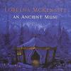

Celtic Lyrics Corner > Artists & Groups > Loreena McKennitt > An Ancient Muse > The Gates Of Istanbul
|  | The Gates Of Istanbul |
| Credits : | Loreena McKennitt |
| Appears On : | An Ancient Muse |
| Language : | English |
Lyrics :
See there past that far-off hill
A tower held in the sky
Hear there in that dark blue night
The music calling us home
See there in that far-off field
Flowers turned to the sky
Feel there in that dark blue night
The music calling us home
Stars may always guide our way
From desert sands where winds blow harsh and long
But here's where our hearts will pray
And all our loves will slumber with a song
(2x)
So now, if our hearts be true
And like a pool of truth, reflect the sun
We will find right honor there
And keep us safe and lead us from all harm
So come, love, let us dance all night
Until birds, they waken at the dawn
Then come, love, let us sing all night
And all our loves will slumber with a song
Then come, love, let us dance all night
Until birds, they waken at the dawn
Then come, love, let us sing all night
And all our loves will slumber with a song